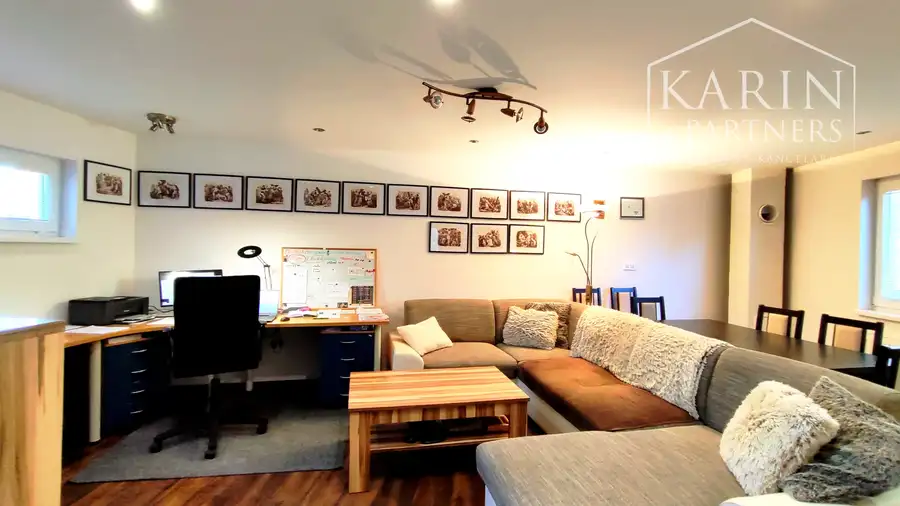
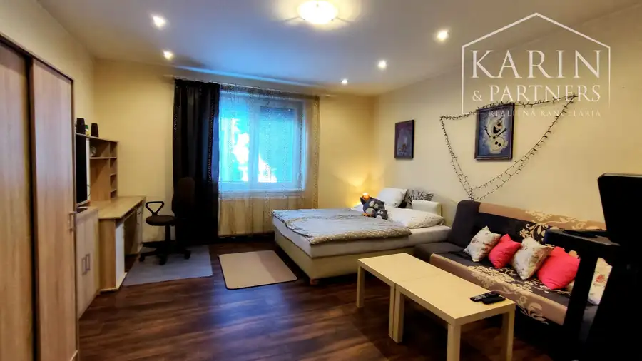
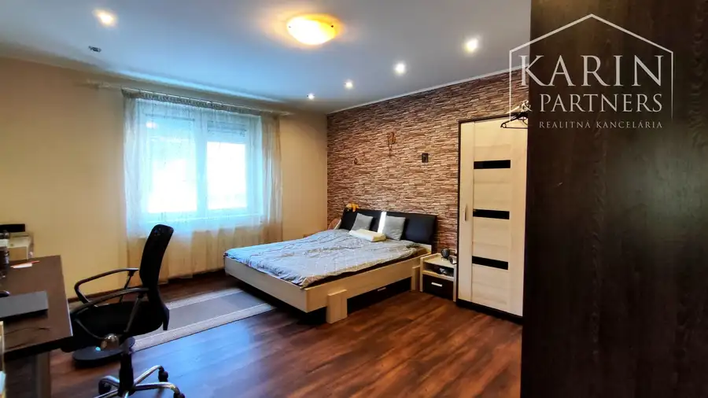
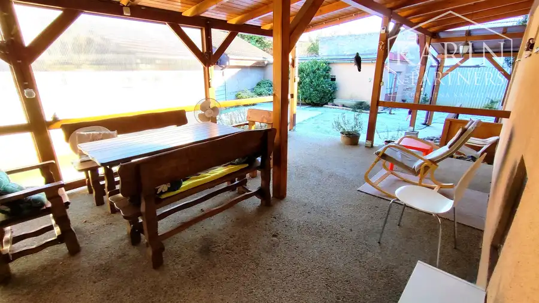
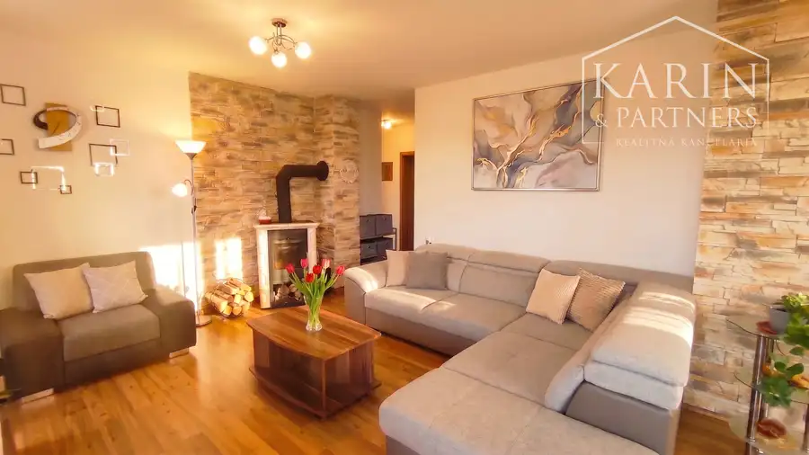

Rodinný dom 6izbový po kompl.rekonštrukcii, Nové Zámky
Nové Zámky





- Plocha210 m²
- StavKompletná rekonštrukcia
- VlastníctvoOsobné
O nehnuteľnosti
6izbový RD | Reko | Multifunkčné využitie | 2x samostatné bytové jednotky | 2xTerasa | Garáž | ZNÍŽENÁ CENA !ZÁKLADNÉ UDAJE :- výmera pozemku cca.490 m2 - dve bytové jednotky s celkovou sumárnou podlahovou plochou 210m2- kolaudácia domu po komplet.rekonštrukcii a dostavbe bola vykonaná v roku 2023- materiál stavby tehla- materiál strechy - pálená škridla- kompletná rekonštrukcia vrátane novej prístavby, nová strecha, zobytnenie podkrovia, zateplená fasáda, elektroinštalácia, kúrenie, nové plastové okná a interiérové aj exteriérové dvere, komplet nové podlahy a nová sanita, 3x nové zariadenie kuchýne- centrálne kúrenie plynovým kotlom cez radiátory- pripojenie na všetky inžinierske siete: voda, plyn, elektrina, kanalizácia (VIS)- okrem napojenia na mestskú vodu, sú na pozemku dve vlastné studne- z ulice je prístup na pozemok z dvoch strán / z oboch strán je tiež umožnený samostatný vstup na pozemok autom cez bránu a tiež parkovanie pri oboch bytových jednotkách - riešenie dvoch prístupov na pozemok, umožňuje naozaj samostatné fungovanie, cez oddelené vstupy pre každú bytovú jednotku zvlášť /dvojdom/DISPOZIČNÉ RIEŠENIE:PRÍZEMIE :Bytová jednotka 1 – vstupná predsieň, hosťovské WC, schodište na poschodie+technická miestnosť, spálňa 1, kúpeňa s vaňou a WC, spálňa 2, kúpeľňa so sprchovacím kútom, kuchyňa s výstupom na veľkú krytú terasu cca.25m2 s vonkajšou kuchynskou linkou a zadný dvor, obývacia hala s pracovným kútom, výstup do dvora k parkovaciemu miestuPodlahová plocha bytovej jednotky 1 - PRÍZEMIE: 125m2+krytá terasa cca.25m2POSCHODIE: Bytová jednotka 2 – schody na poschodie, krytá terasa cca.12m2, 3x obytné miestnosti, kuchyňa, kúpeľňa s WC. Na horné poschodie vedie samostatné schodisko s inštalovaným výťahom pre vozíčkára.Podlahová plocha bytovej jednotky 2 - POSCHODIE: 85m2+krytá terasa cca.12m2VYBAVENIE:- plávajúce podlahy / keramická dlažba / obklady- kompletne plastové okná a dvere- nové rozvody kúrenia a planový kotol- príprava na krb / krbové kachle na drevo- kuchynská linka so vstavanými spotrebičmi PARKOVANIE:K domu patrí samostatne stojaca garáž a tiež samostatné parkovacie miesta pre každú bytovú jednotku vo dvore.Možnosť parkovania aj na ulici pred domom.LOKALITA:Dom sa nachádza neďaleko centra, s dostupnosťou na námestie pešo do cca. 4-5minút VÝHODY:- MULTIfunkčné využitie- kompletná rekoštrukcia, nová strecha, nová prístavba, zobytnené podkrovie- lokalita v širšom centre mesta NZ- kompletne oplotený pozemok, upravený a udržiavaný dvor- samostatná murovaná garáž- ideálna výmera pozemku s možnosťou parkovania vo dvore s miestom až pre 4 autá- kľudná časť mimo hlavných cestných ťahovDom má veľmi dobré dispozičné riešenie, ktoré je rýchlo a variabilne multifunkčne prispôsobiteľné na rôzne varianty využitia:1/ užívanie domu jednou veľkou rodinou,alebo2/ veľmi ľahko prispôsobiteľné na úplne samostatné fungovanie cez dva oddelené vstupy pre každú bytovú jednotku zvlášť / dvojdom/ na obývanie dvomi samostatnými rodinami, alebo dvojgeneračné využitie.alebo3/ Rôzne kombinácie vlastného bývania a s možnosťou prenajímania druhej bytovej jednotky, kedy je možné prenajímaním pokryť výraznú časť čerpaného hypotekárneho úveru. alebo4/ PRÍZEMIE je možné používať ako bývanie pre rodinu a POSCHODIE ako kancelárie / sídlo firmy, prípadne naopakDom je vhodný aj na dvojgeneračné bývanie, prípadne prenajímanie dvoch samostatných bytov (investícia), kombinácia rodinného a firemného využitia, na kancelárie, advokátske a notárske úrady, salón, call centrum, ambulancie, laboratórium a pod.S predajom je možné po dohode poskytnúť aj pokračovanie nájmu pre súčastného nájomíka na bytovú jednotku na poschodí a garantovať tak plynulý prechod existujúceho nájomného vzťahu s okamžitým príjmom, pre nového majiteľa.CENA: 349 900 €V cene je zahrnutá provízia realitnej kancelárie a kompletný právny servis zabezpečovaný advokátskou kanceláriou.Fotografie a text sú autorským dielom spoločnosti KARIN & PARTNERS.KONTAKT K OBHLIADKE:Ing. Ľubomír Klučiar+421 905 854286kluciar.l@karinpartners.skV prípade viacerých záujemcov si majiteľ vyhradzuje právo zvoliť najvýhodnejšiu ponuku.
Parametre
- Druh
- Rodinný dom
- Dátum zverejnenia
- 02. 01. 2026
- Plocha pozemku
- 490 m²
- Plocha terasy v m2
- 48 m²
- Počet garáží
- 1
- Počet izieb / miestností
- 6
- Počet nadzemných podlaží
- 2
- Rok kolaudácie
- 2023
- Rok poslednej rekonštrukcie
- 2023
- Stav nehnuteľnosti
- Kompletná rekonštrukcia
- Terás
- 2
- Terén pozemku
- Rovinatý
- Typ
- Predaj
- Vlastníctvo
- Osobné
- Vybavenie
- Balkón, Terasa, Garáž
- Vykurovanie
- Ústredné
- Úžitková plocha
- 210 m²
Kde to je


Mohlo by Vás zaujímať
 DomNové
320 000 €Hľadáme RODINNÝ DOM v Nových Zámkoch a okolí do 9 km
Nové Zámky
120 m²
DomNové
320 000 €Hľadáme RODINNÝ DOM v Nových Zámkoch a okolí do 9 km
Nové Zámky
120 m²
 BytNové
328 600 €EXKLUZÍVNY luxusný veľkometrážny 3i byt s veľkou terasou
Nové Zámky
3-izbový152 m²
BytNové
328 600 €EXKLUZÍVNY luxusný veľkometrážny 3i byt s veľkou terasou
Nové Zámky
3-izbový152 m²

DomNové 249 490 €NA PREDAJ: 3izbový DOM, NOVOSTAVBA nízkoenergetický bungalov, 3km Piešťany Piešťany 108 m²